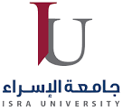

Isra University (IU) is a Jordanian educational institute of higher education, located on Queen Alia International Airport Highway, Amman. The university mission is to provide pioneer academic programs, high quality of education to students and to serve them in its role as a center for the advancement, sharing and use of knowledge in addition to contribute to achieving the aspirations of society through the application of international standards of excellence in academic programs and the development of students, fosters shared values, moral principles, and dedication to serving the common good. Isra University (IU) was founded in 1991 in compliance with the decree (357) of Jordanian Higher Education Council in 1989, and it received its first batch of students at the beginning of the academic year 1991/1992. Since then, the university has sought to be an active partner in the national and regional efforts to enhance the quality of university education and the provision of a university environment that promotes students’ freedom, creativity and attracts qualified students from Jordan, neighboring and foreign countries. At Isra University (IU) we are devoted to providing our students with a high-quality education in all programs offered by the university. The university is also devoted to preparing a generation of young people who can take responsibility for the challenges that may face community through what the university offers from indoor and outdoor activities. The University endeavors always to attain distinction and to foster the spirit of entrepreneurship and innovation in quality teaching, originality of research work, and community services. The University takes upon itself to provide the job market and stakeholders with well-informed and well-trained graduates who are expected to excel in their professions, and who are able to meet the demands and requirements desired by interested parties. The University is moreover determined to be one of its kind in promoting scientific, critical and creative thinking; it moves enthusiastically to achieve distinction through theory and practice-based teaching. In order to achieve all that, the study plans are carefully fashioned to meet the demands and challenges of the market, as well as, the development of teaching methods that meets the skills of this upcoming generations. Further, the University enhances pluralism and civilized thinking and cultural integration, also it disseminates the culture of understanding and tolerance, at the same time it denounces all kinds of violence, fanaticism, and prejudice. Since its inception up to the present time, the University has provided the local and Arab community with highly qualified graduates, taught and nurtured at the hand of distinguished faculty members who acquired Graduate Degrees at various universities, local, regional, and international. University Site: IU is constantly growing and plans to expand its campus facilities to meet the international standards and increase the number of programs offered. Currently, the areas of the buildings exceed 80,000 square meters, in addition to a large area of terraces, green areas, indoor and outdoor sports fields.
